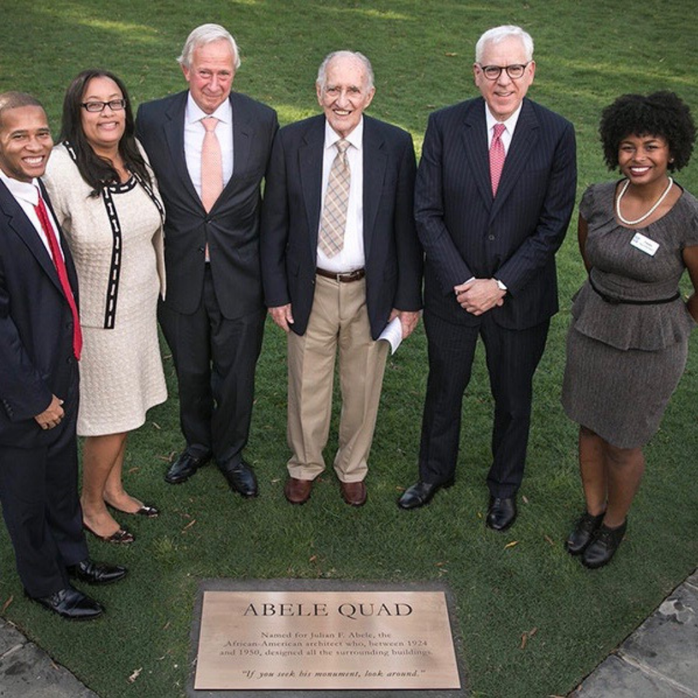
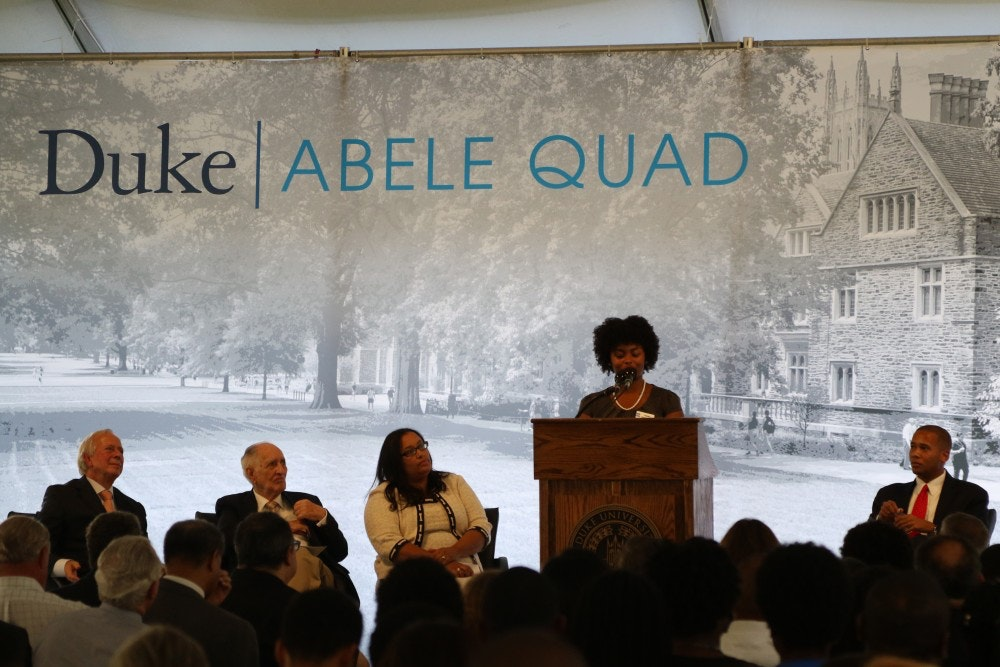
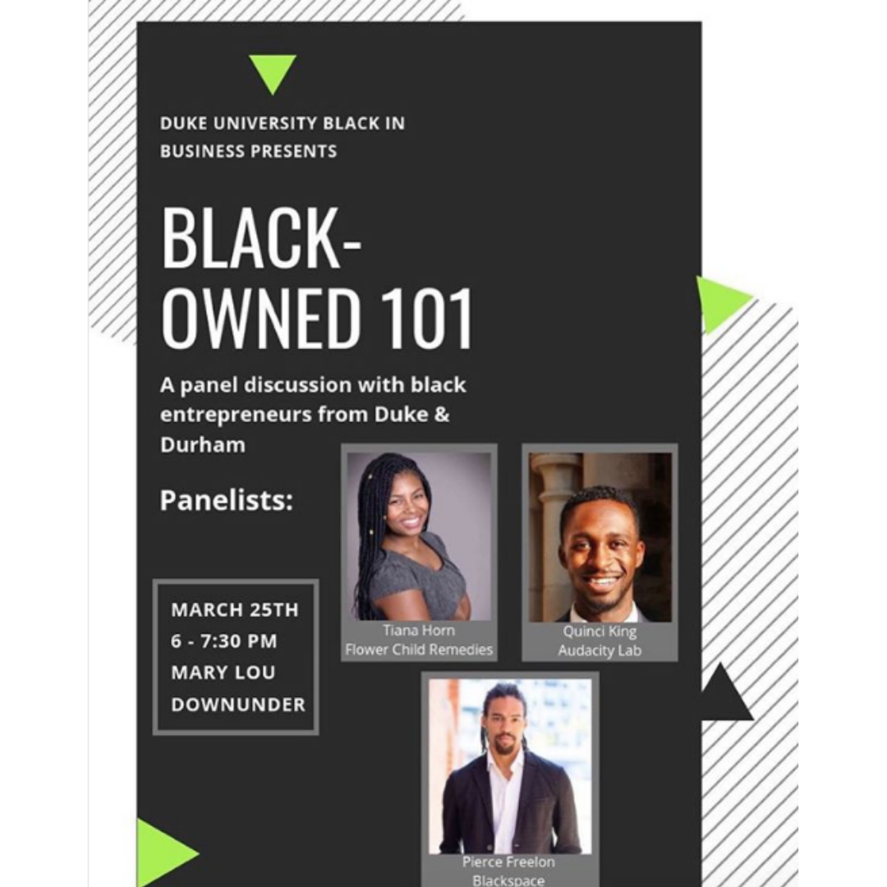
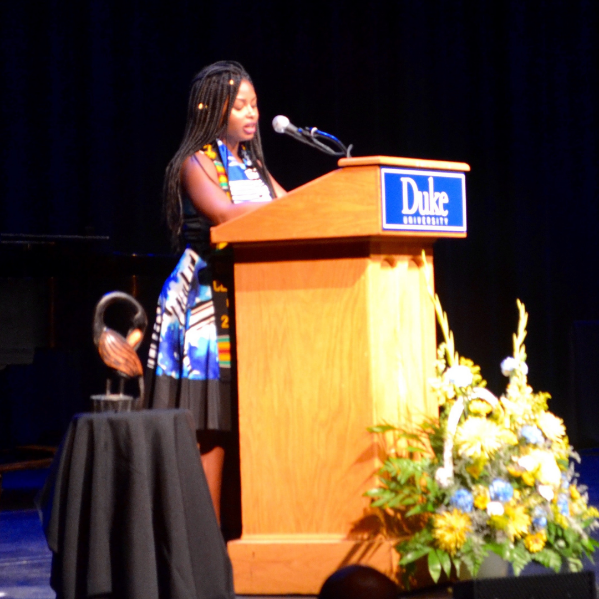

Event Planning
Unapologetically Black feat. KCAMP
Abele Quad Dedication
Abele Awards Ceremony
Zeta Galas
Videography & Video Editing
Glow
Stranger
North Cack
Gala
Bry
Famille
At Your Best
True Life
First Semester
Flower Child First Store
Photography & Photo Editing
Graduation (Elia, Ernie, Mine)
Wedding
Maternity
Baby (Kaylen, Leilani, Jojo)
Holiday
Product
Greek Life (Probates, 25th anniversary)
Graphic Design
Business Graphics (Flower Child, Carpe, SoloPro)
Greek Fliers (Week, Activism, chapel week, Meet the Zetas)
Student Organization Fliers (Abele Awards, Abele Series, Real Talk)
Modeling
Earnestly Natural
Wonsii
Ebony
Flower Child
Cannone Jones
Jabulani African Cultural Showcase
Public Speaking

MLK Commemoration
January 15, 2017
Speech

Abele Quad Dedication
September 30, 2016
Details

Addressed crowd of over 500 at Duke University Abele Quad Dedication honoring the African American architect of Duke's campus, Julian Abele. Speakers also included Julian Abele's son, Julian Abele Jr., Duke University President Richard Broadhead, and Duke University Board of Trustees Chair David Rubenstein.

Choice FM Appearance
February 23, 2019
Details
Description of Choice FM Appearance
Powerful Women Panel
March 7, 2018
Details
Description of Powerful Women Panel

Lessons from Entrepreneurial Women
February 23, 2019
Details
 "Horn encouraged attendees to be bold rather than afraid or tentative, and she emphasized planning and persistence. She also advised taking advantage of the many resources Duke offers: everything from creating a “personal board of advisors” comprised of faculty and staff who’ll go to bat for you, to enrolling in skill-building workshops, to finding cofounders and teammates."
"Horn encouraged attendees to be bold rather than afraid or tentative, and she emphasized planning and persistence. She also advised taking advantage of the many resources Duke offers: everything from creating a “personal board of advisors” comprised of faculty and staff who’ll go to bat for you, to enrolling in skill-building workshops, to finding cofounders and teammates."
Read full event recap here.

Duke University Black in Business Panel
March 25, 2019
Details
 Description of BIB Panel
Description of BIB Panel

Duke Graduation Final Honors Ceremony
May 13, 2017
Details
Delivered closing remarks for historical gradutation ceremony for the Black student body at Duke University. Encouraged students to never forget their endless potential and proven track record for success in light of the new road ahead of them.

Duke Basketball Countdown To Craziness
October 18, 2014
Details
Performed original poem in front of crowd of over 9,000 at Cameron Indoor Stadium followed by a unity step performance with Duke's National Pan-Hellenic Council.
Be Dynamic by Tiana Horn
One day somebody asked me
Who and what is NPHC?
Is it just a parade of colors?
How do they serve? How do they lead?
Well to answer that question
Just look to history
We are the talented tenth
from George Washington Carver to Dr. King
We are A. Philip Randolph’s march
And Dr. Kings speech
We are Langston Hughes words
And Wilt Chamberlain’s reach
We are a legacy of service
And a standard of excellence
We are Zora Neale Hurston’s wisdom
And we are Rosa Parks stance
We are breaking down barriers
Through unanimity of thought and action
We wear our black and white
Each in a different fashion
We’re shades of black and blue
We’re gold and we’re green
We’re pure white and we’re purple
We’re crimson and we’re cream
We all bond together
For greater service to the community
We’re the definition of sisterhood and brotherhood
We’re the epitome of unity
So in case you were wondering
Just who and what we are
In case you couldn’t see past
The yardshows, signs, and calls
In case you were thinking
We were just ordinary Greeks
There is nothing ordinary about us
We are the Dynamic Duke NPHC